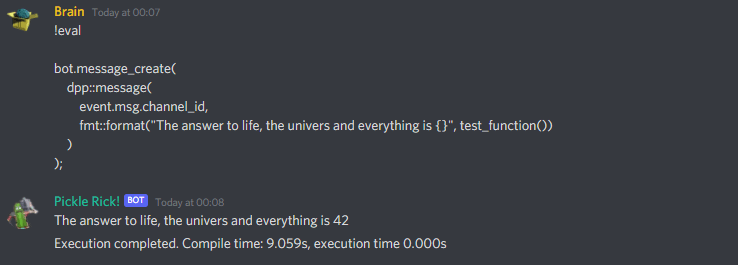

What is an eval command anyway?
Many times people will ask: "how do i make a command like 'eval' in C++". For the uninitiated, an eval command is a command often found in interpreted languages such as Javascript and Python, which allows the developer to pass in raw interpreter statements which are then executed within the context of the running program, without any sandboxing. Eval commands are plain evil, if not properly coded in.
Needless to say, this is very dangerous. If you are asking how to do this, and want to put this into your bot, we trust that you have a very good reason to do so and have considered alternatives before resorting to this. The code below is for educational purposes only and makes several assumptions:
- This code will only operate on UNIX-like systems such as Linux (not Darwin)
- It assumes you use GCC, and have
g++ installed on your server and in your $PATH
- The program will attempt to write to the current directory
- No security checks will be done against the code, except for to check that it is being run by the bot's developer by snowflake id. It is entirely possible to send an
!eval exit(0); and make the bot quit, for example, or delete files from the host operating system, if misused or misconfigured.
- You're willing to wait a few seconds for compilation before your evaluated code runs. There isn't a way around this, as C++ is a compiled language.
To create this program you must create two files, eval.h and eval.cpp. The header file lists forward declarations of functions that you will be able to use directly within your eval code. As well as this the entire of D++ will be available to the eval command via the local variable bot, and the entire on_message_create event variable via a local variable called event.
The evaluated code will run within its own thread, so can execute for as long as it needs (but use common sense, don't go spawning a tight while loop that runs forever, you'll lock a thread at 100% CPU that won't ever end!).
Implementation details
This code operates by outputting your provided code to be evaluated into a simple boilerplate program which can be compiled to a shared object library (.so file). This .so file is then compiled with g++, using the -shared and -fPIC flags. If the program can be successfully compiled, it is then loaded using dlopen(), and the symbol so_exec() searched for within it, and called. This so_exec() function will contain the body of the code given to the eval command. Once this has been called and it has returned, the dlclose() function is called to unload the library, and finally any temporary files (such as the .so file and its corresponding .cpp file) are cleaned up. Docker is definitely recommended if you code on Windows/Mac OS, because docker desktop still uses a linux VM, so your code can easily use .so file and your code runs the same on your vps (if it also uses Linux distro)
Source code
- Warning
- If you manage to get your system, network, or anything else harmed by use or misuse of this code, we are not responsible. Don't say we didn't warn you! Find another way to solve your problem!
eval.h
Remember that eval.h contains forward-declarations of any functions you want to expose to the eval command. It is included both by the bot itself, and by any shared object files compiled for evaluation.
#pragma once
#define MY_DEVELOPER 189759562910400512
int test_function();
eval.cpp
This is the main body of the example program.
#include <dpp/dpp.h>
#include <fmt/format.h>
#include <fstream>
#include <iostream>
#ifndef _GNU_SOURCE
#define _GNU_SOURCE
#endif
#include <link.h>
#include <dlfcn.h>
#include "eval.h"
int test_function() {
return 42;
}
int main()
{
bot.on_message_create([&bot](const auto & event) {
if (event.msg.author.id != MY_DEVELOPER) {
bot.message_create(dpp::message(event.msg.channel_id, "On the day i do this for you, Satan will be ice skating to work."));
return;
}
std::string code = "#include <iostream>\n\
#include <string>\n\
#include <map>\n\
#include <unordered_map>\n\
#include <stdint.h>\n\
#include <dpp/dpp.h>\n\
#include <dpp/nlohmann/json.hpp>\n\
#include <fmt/format.h>\n\
#include \"eval.h\"\n\
extern \"C\" void so_exec(dpp::cluster& bot, dpp::message_create_t event) {\n\
event.msg.content,
6,
) + ";\n\
return;\n\
}";
std::string source_filename = std::to_string(event.msg.author.id) + "_" + std::to_string(event.msg.id) + ".cpp";
std::fstream code_file(source_filename, std::fstream::binary | std::fstream::out);
if (!code_file.is_open()) {
bot.message_create(dpp::message(event.msg.channel_id, "Unable to create source file for `eval`"));
return;
}
code_file << code;
code_file.close();
"-std=c++17",
"-shared",
"-fPIC",
std::string("-o") + std::to_string(event.msg.author.id) + "_" + std::to_string(event.msg.id) + ".so",
std::to_string(event.msg.author.id) + "_" + std::to_string(event.msg.id) + ".cpp",
"-ldpp",
"-ldl"
}, [event, &bot, source_filename, compile_start](const std::string &output) {
double compile_time = dpp::utility::time_f() - compile_start;
std::string del_file = std::string(getenv("PWD")) + std::to_string(event.msg.author.id) + "_" + std::to_string(event.msg.id) + ".cpp";
unlink(del_file.c_str());
if (output.length()) {
bot.message_create(dpp::message(event.msg.channel_id, "Compile error: ```\n" + output + "\n```"));
} else {
std::string dl = std::string(getenv("PWD")) + std::to_string(event.msg.author.id) + "_" + std::to_string(event.msg.id) + ".so",
auto shared_object_handle = dlopen(dl.c_str(), RTLD_NOW);
if (!shared_object_handle) {
const char *dlsym_error = dlerror();
bot.message_create(dpp::message(event.msg.channel_id, "Shared object load error: ```\n" +
std::string(dlsym_error ? dlsym_error : "Unknown error") +"\n```"));
return;
}
dlerror();
function_pointer exec_run = (function_pointer)dlsym(shared_object_handle, "so_exec");
const char *dlsym_error = dlerror();
if (dlsym_error) {
bot.message_create(
dpp::message(event.msg.channel_id,
"Shared object load error: ```\n" + std::string(dlsym_error) +
"\n```"));
dlclose(shared_object_handle);
return;
}
exec_run(bot, event);
dlclose(shared_object_handle);
unlink(dl.c_str());
"Execution completed. Compile time: " + std::to_string(compile_time) +
"s, execution time " + std::to_string(run_time) + "s"));
}
});
}
});
return 0;
}
The cluster class represents a group of shards and a command queue for sending and receiving commands...
Definition: cluster.h:271
double DPP_EXPORT time_f()
Return the current time with fractions of seconds. This is a unix epoch time with the fractional seco...
size_t DPP_EXPORT utf8len(const std::string &str)
Returns the length of a UTF-8 string in codepoints.
std::function< void(const dpp::log_t &)> DPP_EXPORT cout_logger()
Get a default logger that outputs to std::cout. e.g.
void DPP_EXPORT exec(const std::string &cmd, std::vector< std::string > parameters={}, cmd_result_t callback={})
Run a commandline program asynchronously. The command line program is spawned in a separate std::thre...
std::string DPP_EXPORT utf8substr(const std::string &str, std::string::size_type start, std::string::size_type length)
Return substring of a UTF-8 encoded string in codepoints.
@ i_message_content
Intent for receipt of message content.
Definition: intents.h:64
@ i_default_intents
Default D++ intents (all non-privileged intents)
Definition: intents.h:72
@ st_wait
Wait forever on a condition variable. The cluster will spawn threads for each shard and start() will ...
Definition: cluster.h:254
Create message.
Definition: dispatcher.h:1354
Represents messages sent and received on Discord.
Definition: message.h:1105
Compilation
To compile this program you must link against libdl. It is also critically important to include the -rdynamic flag. For example:
g++ -std=c++17 -rdynamic -oeval eval.cpp -ldpp -ldl
Example usage
